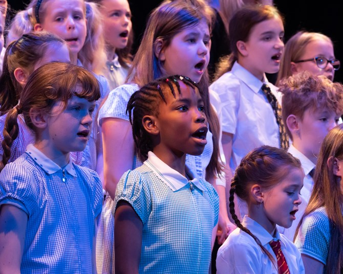
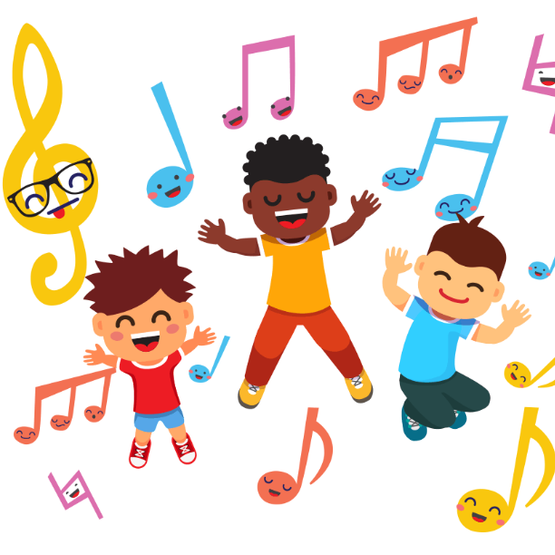

Our Programs
Music Education for Youth

This program focuses on providing underprivileged youth with access to music education, instruments, and mentorship to inspire their creativity and talent. By offering free music lessons, instrument rentals, and one-on-one guidance from experienced musicians, this program aims to empower young people from underserved communities.
Community Choir
Join our inclusive community choir and embark on a musical journey! Whether you're a seasoned singer or a first-time vocalist, our welcoming environment is designed to nurture your talent and foster a love for music. Through weekly rehearsals, you'll have the opportunity to learn new songs, improve your vocal technique, and harmonize with fellow choir members.
Healing Through Music
Our Healing Through Music program offers transformative workshops designed to harness the power of music for holistic well-being. Through carefully crafted therapeutic sessions, we guide participants in exploring the emotional and psychological benefits of music.